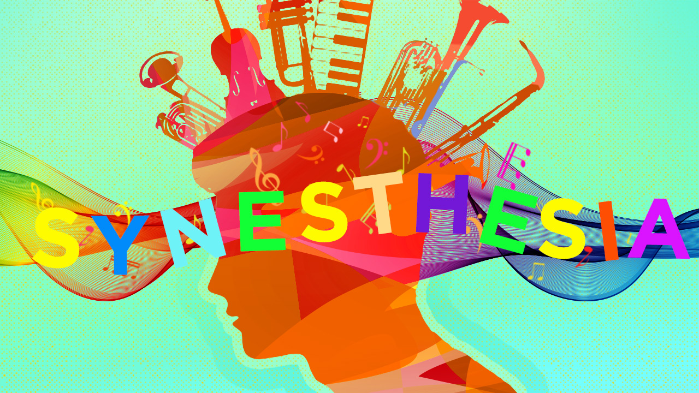

© 2012 The Hidden Aspie | Content - Valerie Carlin | Design & Website - Jan Szafranski | Site Contents
Share this page
This is a simple description of the inner manifestation, and actually expands further. So far I have described it in two dimensions. This is inaccurate since as well as moving backwards and forwards through an event and left and right through overlapping events, I also climb up and down. The effect is more like a bucky ball, or being in one of those giant transparent zorbing balls people get inside and roll. In my case I stay still but the three-dimensional 'pizza' rotates around a single point somewhere in my stomach.
I know this sounds fantastical, even if you can understand it, but this is all I have known my entire life and is not only perfectly normal to me, but is how I interact with the world. This for me is 'reality'. However, I came to realise that not everyone's reality is the same as mine. And so will be true of other Aspies. But once understood, it can be discussed in light of other perceptions, and help integration in society.

Synaesthesia
It is not at all unusual for Aspies to have some form of synaesthesia, either less or more intrusive. Like other hidden traits, the Aspie is usually unaware since there are no obvious clues from observing others. In the same way that someone who is colour-blind may not be aware (given that it has always been that way) when looking at some grass... (s)he would see red but actually call red "green", so nobody notices. Synaesthesia is a similar hidden quality.
What causes Synaesthesia?
The Aspie brain is physically different from the brain of a non-aspie. Recent research involving fMRIs has shown that generally the Aspie brain is larger with more surface area, has an enlarged hippocampus (believed to be the manager of memory), and a broader corpus callosum. This means that the Aspie brain processes faster, thinks in pictures rather than words, but this can overwhelm the Aspie. Too much information is absorbed and processed, and is amplified by the double amount of neural connections. When a baby is born, (s)he has twice the number of neural connections than necessary... possibly to aid in developing. At a certain point, about 2 to 3 years, a switch is turned on which removes half the connections. But it has been observed that this switch is not thrown in the Aspie's brain development... which results in ultra sensitivity to touch, smell, sight, sound all being processed at quicker than normal speeds. As one would expect, this can be a blessing when managed, but is also why many young Aspies appear shut down (until a time they can adapt to this state).
There are different forms of synaesthesia, since because the brain is so crowded with twice as many connections, the areas associated with the senses begin to overlap. This means that senses become entwined with each other. In practice this results in the synaesthetic smelling a colour, or hearing colours. Many synaesthetics see letters on a page in colours... each letter is always a specific colour. And many more 'see' music when they hear it, as a wonderful lightshow... which might sound like some annoying tune to the parent, but is a calming cloud of colour for the Aspie child. There are more, but one of the strangest is spatial sequence synaesthesia.
Personal experience (from Jan Szafranski's blog Who am I?)
Spatial sequence, or time-space, synaesthesia is believed to be rare, but personally I have my doubts. Just as when my memory type felt unique, so too I imagined my synaesthesia. But the more Aspies I encounter, the more I find who experience this to lesser or greater degrees. So how does it work? In my case it is entangled with my face blindness, which I also believe to be common among Aspies. That is if synaesthesia is caused by the overcrowding of neural connections in the brain combining senses, then synaesthetic traits will also combine. So in my particular case, if I need to remember something, I need to 'rewind' time until I 'see' and re-experience (as if it were the first time) the relevant moment in time. And because of my developmental prosopagnosia, if I see a face in the street whom I 'know-I-know' but whom I can't recognise, I just can't 'remember the last time I saw them' but instead need to rewind everything/time until I come across the face in a previous 'moment'. So this would be one example of how hidden traits can interact with each other... with positive or negative results. Either way, it will take understanding and some getting used to, and a family member or parent can help. But before the Aspie can be helped, the specific synaesthesia needs to be understood.
Now the common forms of synaesthesia are generally well known but others, such as time-space synaesthesia, are little known and since the Aspie is unaware that (s)he perceives space and time differently, it invariably causes trauma. So what is happening to the Aspie with this trait? Effectively, they see time in space.
Time
This is very hard to describe, so apologies if it becomes incomprehensible. I can only describe my experience, and hope that it makes sense, and offers some insight in what might be behind some odd behaviour.
Firstly, time does not exist. As radical as this might sound, it is apparent not only to me, and those with my type of brain, but to everyone who tries to understand it. I won't go into explaining it further here, suffice to say that I (and everyone one of us) exist only now, and always. That is that I have no past nor future, everything is now. What I do have is a growing collection of experiences, which are manifest as changes to my circumstances, be it aging or writing this.
As such, I exist in a 'reality' that is multi-layered rather than sequential. For 50 years I knew no different and assumed this was the norm and that everyone lived their lives like this. I now recognise that most people view time as an arrow, with the past stretching behind them and the future ahead of them (or similar analogies) as if on a train track.
However, for me I am experiencing everything at once. And it is overwhelming. It has taken a lifetime to learn how to deal with this 'reality'. But even so, as soon as something triggers a previous experience, outside of my control I find myself back 'then' as well as 'now'. Don't misunderstand me, I am not describing re-living a memory from a current perspective, it is more like I have seen in regressional hypnotherapy where the hypnotised person can reenact an event while simultaneously speaking to the practitioner.
So what does 'time' look like to me? It varies among similar synaesthetics and is hard to describe. Some visualise a three-dimensional calendar in front of them (like a hallucination), a filing cabinet, or a ladder going up to a date and down to a previous date. My particular manifestation is something like a giant bicycle wheel, with me at the centre with the spokes emerging out of my torso. Between each spoke, along the rim, is an event, with each following spoke being a split second after. The wheel rotates and is also endless, in that I can't see what is behind me but can see everything to-date experienced now as then. But I am not 'watching' the event on the rim happen, I am instead drawn into it as the person I was at the time. So I am not 'remembering' nor 're-living' the event, but almost as if I have time travelled back to that moment, and doomed to experience it as I once did.
It is how I interact with memory and time that can produce strange behaviour. For example, I can move my arms in real space and 'turn' the wheel around me. it may be more accurate to describe it as a giant pizza with me at the centre with each event running down the pizza piece, from me to the edge and beyond, with an overlapping event running down beside it. And I am drawn along each event from me to beyond the edge as well as rotating around the pizza. But to an outside observer I look like I lose focus and then wave my hands in the air. So the next time you ask an Aspie something and they tilt their head and flick their arms, walk around, or interact with invisible objects you are actually watching them remember something. Naturally, forcing them to keep still and focussed would actually prevent them from 'thinking' and at best would leave them numb, or at worse drop them into a terrifying reality (with consequential physical reaction).
